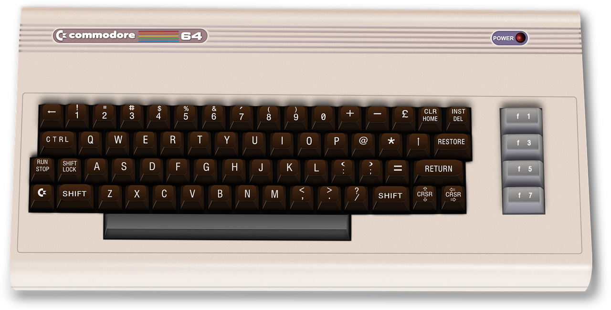

Ho iniziato ad interessarmi di informatica quando avevo circa 13-14 anni. All'epoca sono usciti
sul mercato i primi "personal computer". Lo metto tra virgolette perché a vederli con la prospettiva di oggi sarebbe
difficile chiamarli "personal computer". Fatto sta che appena possibile riuscii a farmi comprare dai miei genitori un
Commodore VIC20 con registratore per memorizzare su cassetta magnetica i programmi. Gli hard-disk erano cose da fantascienza.
Vi racconto questo aneddoto: insieme al computer veniva dato un manualetto che insegnava un pò di BASIC e c'erano dei programmini
di esempio. Io copiavo questi programmini sul mio VIC20, li lanciavo con il comando RUN e ricevevo il messaggio di °sintax error°.
Ricontrollavo, ma era tutto ok. Non riuscivo a capire quale problema c'era. Dopo un paio di giorni di tentativi ho capito!!!!
Osservando la tastiera del computer mi sono accorto che dopo il 9 c'era un cerchio sbarrato e ho capito che era lo zero. Io che
ero abituato ad usare la macchina da scrivere usavo indifferentemente la o e lo 0, ma per il computer erano due cose diverse.
😊 😊 😊
Dopo un po' di tempo e continuando a fare esperimenti in BASIC, una sera ho ricevuto un sorprendente messaggio: "out of memory"!
Avevo scritto un programma che eccedeva la memoria disponibile del computer! Sono rimasto allibito. Successivamente a opera di
convincimento i miei genitori mi hanno comprato un "mega-galattico" Commodre 64.
TAH-DAH Eccolo:

Si attaccava alla TV che faceva da monitor. Mi sono divertito molto con il mio Commodore 64.
Purtroppo però all'epoca
non c'era ancora la facoltà di informatica, così dopo aver conseguito il diploma di ragioneria mi iscrissi alla facoltà di
Economia e Commercio.
Dopo mezzo anno lasciai l'università e trovai lavoro come rappresentante commerciale, dopo tre mesi venni assunto dal comune
di Settimo Torinese al CED (Centro Elaborazione Dati) in sostituzione di una maternità.
Dopo alcuni mesi venni assunto dalla FIAT. Lavorai per circa due anni alla Alfa-Lancia di Chivasso e poi accettai il
trasferimento a Torino dove era in corso il nuovo progetto di Verifica Fatture.
Dopo un paio di anni chiesi il trasferimento all'estero e accettai l'incarico di andare in Polonia per installare il nuovo
sistema negli stabilimenti polacchi.
 Dopo un paio di anni accettai il trasferimento in Germania dove venni incaricato di installare il nuovo progetto di verifica
fatture nello stabilimento tedesco di Iveco-Magirus.
Dopo un paio di anni accettai il trasferimento in Germania dove venni incaricato di installare il nuovo progetto di verifica
fatture nello stabilimento tedesco di Iveco-Magirus.
Tornato in Polonia venni nominato responsabile del nascente centro di shared service dedicato al Ciclo Passivo che nell'arco
di due anni, sotto la mia guida passò da 10 impiegati a 230 con la gestione del Ciclo passivo delle società del gruppo FIAT
italiane, francesi, tedesche, spagnole e belghe.
Dopo questa esperienza passai un anno in Italia e successivamente tornai in Polonia, alla Avio questa volta con l'incarico
di controller.
Dopo un anno realizzai l'insourcing della contabilità e divenni responsabile AFC (Accounting, Finance, Controlling). Carica
che mantenni per una decina di anni fino al 2014. Nel frattempo ripresi Economia Aziendale e mi laureai.
Nel 2014 venni nominato membro del consiglio di amministrazione della Avio Polska con le responsabilità su: finanziamenti
pubblici, International Trade Compliance e della Security.
Nel 2018 mi sono dimesso da tutte le cariche eccetto la Security e ho richiesto di lavorare part-time. L'altro part-time
l'ho dedicato a una iniziativa commerciale, ma dall'inizio del 2020 ho deciso di tornare al mio primo "amore": l'informatica.
E da allora sto studiando con impegno per diventare "full stack developer".